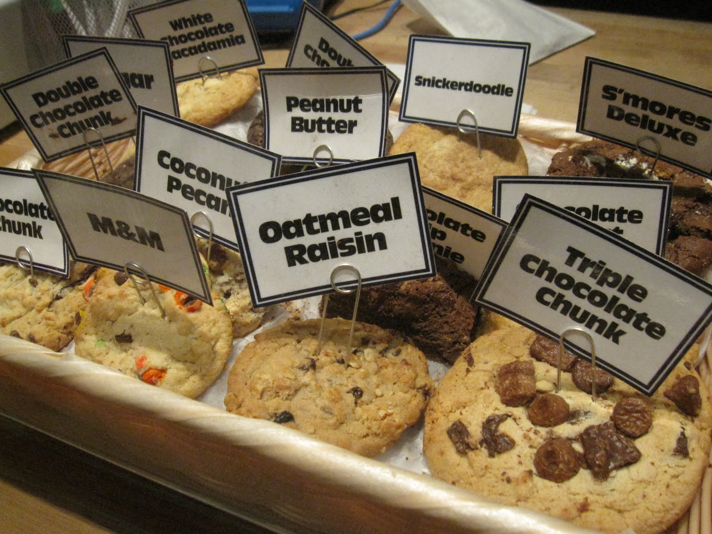
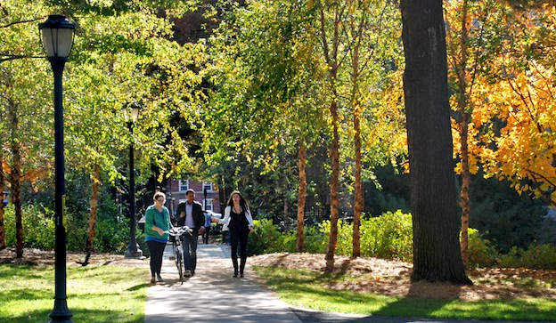

Join Us!
The Yale Undergraduate Math Society, also known as YUMS, is a club of undergraduates interested in math, whether it's statistics, pure math, or applied. We host lectures by students and faculty, Putnam problem-solving sessions, career panels, social events, and picnics. Join us!
Join our mailing list >>FAQs
"What is YUMS?""
"When do you meet?""
"Can I take the Putnam Exam?"
Check out our FAQ for the answers to all of these questions and more!
Read more >>Research and Internships

There are a wealth of research opportunities for Yale students both at Yale and elsewhere.
Research Experiences for Undergraduates are summer programs funded by the NSF in a variety of sciences, including pure mathematics. They vary a great deal as to style, duration, topic, and location.
Read more >>The Actual Factual Real YUMS Website
Contact Info
Posted on: Sept. 30, 2013 Posted by: Admin
You can reach us at yalemathsociety@gmail.com.
For information about the Yale Math department, visit their website.
To get on (or off) our mailing list, email Ben or go to panlists.yale.edu and do it yourself.
Co-President: Ben Horowitz
Co-President: Vicky Tu
Secretary: Owen Barrett